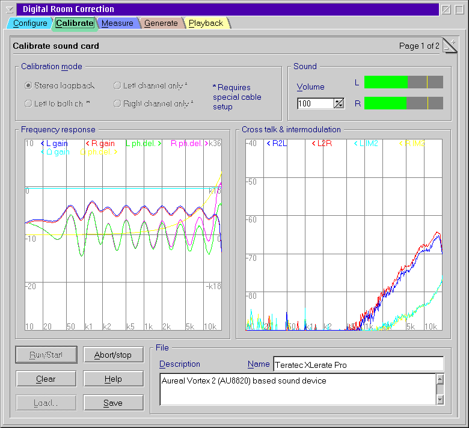

Connect left line in of your sound card to
left line out and right line in to ground.
Connect left line in of your sound card to
left line out and right line in to ground.
It is not required that the response is approximately at 0 dB as long as the result is smooth.
Connect left line in of your sound card to
left line out and right line in to ground.If you do not get reasonable results in step 5, especially if the green and pink graph in the frequency response are noisy and graphs on the right show high and irregular values, then it is likely that you overdrive your line input.
Reduce the volume and repeat from step 5.
If the frequency response is irregular but well reproducible (does not change with longer measurements) then most likely you have REALEQ or some other equalizer plug-in still enabled.
Disable all equalizers and other sound enhancement plug-ins except for DCR123 unless you want DRC123 to compensate for the effect of them. ;-)
If the response decreases at higher frequencies with measurement time then you used another sound card for playback and recording. This causes the the frequencies of the test signal to be slightly shifted because of tolerances of the crystal oscillators of the sound devices.
DRC123 is not designed to work with frequency shifts because this would significantly decrease the accuracy of the results. DRC123 relies on several symmetries of the setup to get high precision results from cheap, uncalibrated hardware. The exact frequency is one of them. So it is essential to use the same device for recording and playback. This also implies that USB measurement microphones are unusable (i.e. Behringer ECM 8000) because they cannot support a synchronous playback channel.